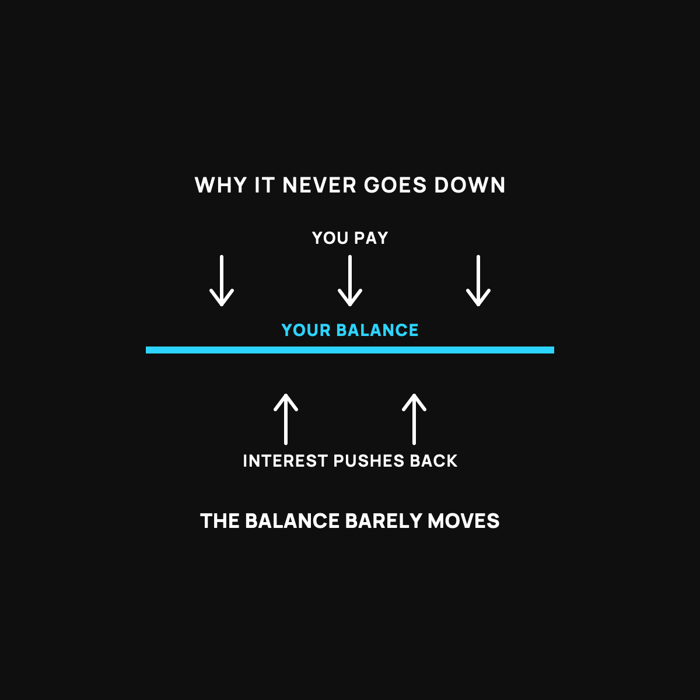

The Real Cost of Carrying a Credit Card Balance
Your balance is a boat with a hole. The minimum payment is a small cup.

If you've ever made your credit card payment on time, every month, and watched the balance barely move, you're not doing anything wrong. The card is built to work that way. Once you see how, you can beat it. Here's the plain version.
Bailing a boat with a hole in it
Picture a small boat with a slow leak. You're bailing water out with a cup, steady and faithful. But water keeps seeping in through the hole. If you bail out about as much as leaks in, you can bail all day and the water level never drops. You're working hard and going nowhere.
A credit card balance works the same way. Your monthly payment is the bailing. The interest is the hole letting water back in. If your payment is close to just covering the interest, the balance barely moves no matter how faithfully you pay. That's not your failure. That's the design.
What "interest" is really doing
Here's the part that stings. Interest is rent you pay on money you already spent. The card company charges you a percentage of your balance every month just for carrying it. Credit card rates are some of the highest around, often over 20 percent a year. On a balance you carry, that's a serious amount of water coming through the hole, month after month.
And the "minimum payment" printed on your bill is set low on purpose. It's the smallest cup they'll let you bail with. Pay only that, and you can be at it for years, sometimes paying back far more than you ever charged.
How to actually drain the boat
Two moves. Plug the hole, then bail hard.
First, pay more than the minimum. Anything above the minimum goes straight at the balance itself, not just the interest. Even a little extra each month changes the math a lot, because you're finally bailing faster than it leaks.
Second, if you've got more than one card, throw your extra money at the one with the highest interest rate first, while paying the minimum on the rest. That's the biggest hole, so plug it first. When it's gone, roll that whole payment onto the next card. The boat drains faster and faster as you go.
The move that keeps you out of the boat
The reason a lot of people end up carrying a balance in the first place is a surprise expense with no cushion to catch it. That's exactly what a small emergency fund is for. Even a starter cushion keeps the next surprise off the card. I wrote about building that first thousand here, and about finding the money to do it here.
The takeaway
A credit card balance is a boat with a hole in it, and the minimum payment is a cup barely keeping up with the leak. The interest is the hole. Pay more than the minimum, attack the highest rate first, and build a small cushion so the next surprise doesn't put you back in the water. You can drain this boat. The card is just betting you won't try.
New here?
Normaltown USA is plain-English money and healthcare help for normal people. No jargon, no hype. Start here.